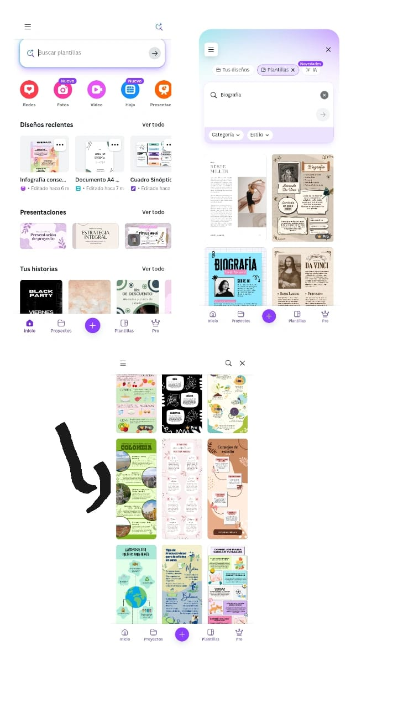

canva
CANVA ES
Es una herramienta de diseño y publicacion online que tiene como mision poner el poder del diseño al alcance de todo el mundo tambien es una plataforma en línea
de diseño grafico que permite crear, editar y compartir diseños visuales de diversos tipos, como presentaciones, publicaciones en redes sociales, videos, carteles y mucho más. Sirve para que cualquier persona, sin importar su experiencia en diseño,
pueda crear contenido visual profesional de forma rápida y sencilla
PARA QUE SIRVE
es una herramienta de diseño online que permite a cualquier persona, sin necesidad de conocimientos previos, crear diseños visuales atractivos. Es útil para crear contenido para redes sociales, presentaciones, pósters, invitaciones, logos, y mucho más, a través de una interfaz intuitiva y una amplia biblioteca de plantillas y recursos. Tambien
ofrece funciones adicionales como edicion de fotos, conversion de archivos, y herramientas de diseño con IA
COMO SE UTILIZA
Paso a paso
1.Crea tu cuenta El primer paso es crear una cuenta en Canva gratis
2.Explora la biblioteca para conocer las plantillas
3.Elige la plantilla que acompañará tus publicaciones
4.La imagen y el texto
5.Comparte o descarga la imagen

QUIEN CREO CANVA
Canva fue fundada por Melanie Perkins, Cliff Obrecht y Cameron Adams

COMO AYUDA ALA COMUNIDAD DIGITAL
Canva, como herramienta de diseño gráfico en linea, contribuye significativamente
a la comunidad digital al facilitar la creacion de contenido visual para una amplia gama de propositos, incluyendo redes sociales, educacion, marketing y más.
Facilita la creacion de contenido visual
Empodera a personas sin experiencia en diseño
Promueve la colaboracion
Apoya la educacion
Potencia el marketing y la comunicacion
Impulsa la creatividad e innovacion
QUE DIFERENCIA HAY ENTRE CANVA,MENTIMETER,GEANIALLY
Canva, Mentimeter y Genially son herramientas digitales que se utilizan para la creacion de contenidos, pero con enfoques distinto
Canva: Diseño grafico general.
Mentimeter: Presentaciones interactivas para audiencia.
Genially: Diseño interactivo y dinámico para diversos contenidos.
REGRESO:)